Waste Concern
Environmentalist
Municipal climate-action planning, geospatial risk assessment, field verification and implementation planning.
View experience →Urban and Regional Planning graduate from Bangladesh University of Engineering & Technology (BUET), with research interests at the intersection of environmental change, urban development, climate resilience and geospatial analysis.
My work combines remote sensing, GIS, spatial analysis, field-based planning and applied climate research to understand changing urban and environmental systems and translate evidence into practical planning decisions.
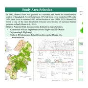
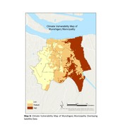
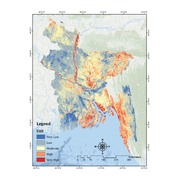
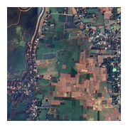
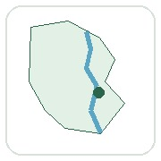
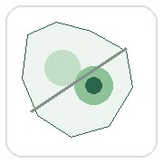
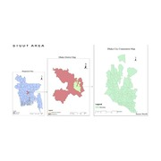
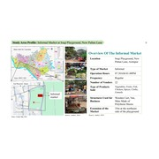
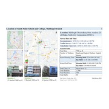
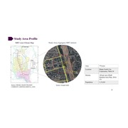
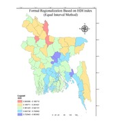
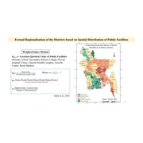
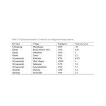
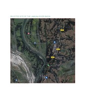
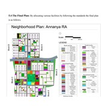
Aktar, F., & Hossain, D. (2025).
Applied work spanning climate action, national spatial planning, climate finance and adaptation programming.
Municipal climate-action planning, geospatial risk assessment, field verification and implementation planning.
View experience →Spatial Planning Framework development, technical compilation, stakeholder workshops and coordination.
View experience →Climate-finance research, national workshops, policy documentation and stakeholder coordination.
View experience →Adaptation-finance training, participant management, evaluation, reporting and program delivery.
View experience →Locally led adaptation research, climate-impact documentation and GCF training support.
View experience →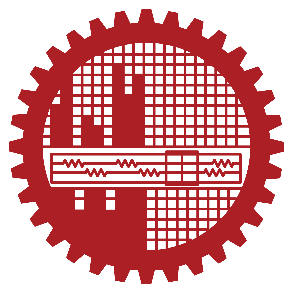
2019–2024
2016–2018
2014–2016
Listening 8 · Reading 8
Writing 7.5 · Speaking 7
Training across environmental assessment, risk management, stakeholder engagement, environmental clearance and environmental modelling.
Presented thesis findings on protected-area land-cover change, vulnerable communities and environmental justice.
Recognition from North South University for SDG awareness videography.
Recognition in the Climate Science Olympiad.
Recognized by the Economic Relations Division, Ministry of Finance, for performance in the workshop on strengthening access to the Green Climate Fund for SMEs in Bangladesh.
Completed the Bronze Standard of the international youth development award.
I welcome conversations about graduate research, research assistantships and collaborative work in remote sensing, GIS, urban planning and climate resilience.